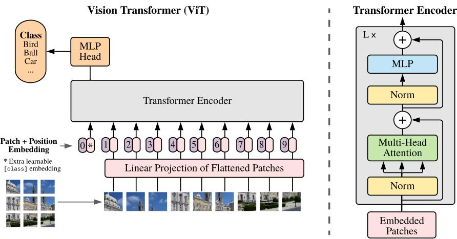
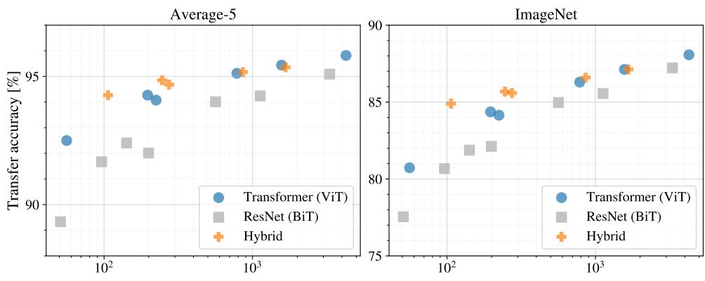
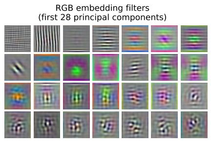
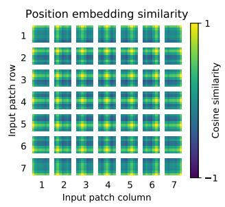
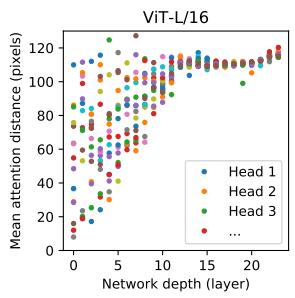

15.2 视觉编码器：ViT 把图像切成 Token
本页范围：第 15 章第 2 节 | 整理时间：2026-10-10
15.1 节把多模态的全部困难归结为模态鸿沟，并预告了填平它的第一道工序：视觉编码器。本节就拆解这道工序里最经典的设计——2020 年的 Vision Transformer（ViT）。它的历史意义不在于某个精巧模块，而在于一个反直觉的克制：面对与文本形态迥异的图像，作者选择几乎什么都不改，把「图像 → 序列」这一步做到最薄，然后把第 4 章讲过的 Transformer 整个搬过来。这个「能不改就不改」的思路后来被证明极其成功，今天的 VLM 视觉编码器几乎都是它的直系后代。
本节按「输入怎么造 → 模型怎么走 → 凭什么敢这么做 → 效果如何 → 对多模态意味着什么」的顺序展开，路线图如下：
- 从词到图块：patch embedding 就是视觉版的分词加嵌入（15.2.1）：一张 224×224 的照片如何变成 197×768 的序列；
- 模型全貌：公式 (1)–(4) 逐项拆解（15.2.2）：[CLS] token、位置嵌入、编码器主循环，对照论文原图；
- 归纳偏置的取舍：CNN 先验 vs 数据规模（15.2.3）：ViT 为什么敢「裸奔」，又在什么条件下会输；
- 实验与内部表征：缩放研究与三项体检（15.2.4）：2–4 倍算力优势，以及模型内部到底学到了什么；
- 从 ViT 到 VLM：视觉编码器在多模态中的角色（15.2.5）：分类头被扔掉之后，ViT 如何变身 VLM 的眼睛。
本节公式与数字全部出自 ViT 原论文（Dosovitskiy et al., 2021），阅读时建议随时对照第 3 章（嵌入与位置编码）与第 4 章（Transformer 编码器）——ViT 里没有新零件，只有新组合。
15.2.1 从词到图块：patch embedding 就是视觉版的分词加嵌入
第 2 章讲过，文本进模型前要先分词：把字符串切成词表里的离散单位，再查嵌入表变成向量。ViT 对图像做的事在结构上一模一样，只是「分词器」换成了一把刀——把图像切成固定大小的方块（patch）。
以最常见的配置 ViT-B/16 处理 224×224 彩色照片为例。原论文把图像记作 \(\mathbf{x}\in\mathbb{R}^{H\times W\times C}\)，其中 \(H,W\) 是分辨率、\(C\) 是通道数；每块大小为 \(P\times P\)，则块数为 \(N=HW/P^{2}\)。代入 \(H=W=224\)、\(C=3\)、\(P=16\)：块数 \(N=224\times224/16^{2}=196\)，每块展平后是 \(16\times16\times3=768\) 维的向量。这 196 个「图块 token」，就相当于一句话里的 196 个词。
分词之后是查嵌入表；图块没有词表可查，替代方案同样朴素——一次可学习的线性投影：用一个 \(768\times768\) 的矩阵 \(\mathbf{E}\)（一般情形是 \((P^{2}\cdot C)\times D\)）把每个展平图块映射到 Transformer 的工作维度 \(D\)（ViT-B 为 768）。这步投影称为 patch embedding，它就是视觉版的「嵌入层」：把每块原始像素翻译成 \(D\) 维语义向量的初始版本，投影矩阵随训练一起学习。整个形状流变如图 1：
15.2.2 模型全貌：公式 (1)–(4) 逐项拆解
输入序列造好之后，剩下的就是标准动作。原论文用四个公式写完整模型，对照论文的模型概览图（图 2）逐项拆解：

模型规模沿三个档位缩放，配置直接沿用 BERT 的 Base/Large 并外加更大的 Huge（表 1）：
| 模型 | 层数 \(L\) | 隐藏维度 \(D\) | MLP 隐层 | 注意力头数 | 参数量 |
|---|---|---|---|---|---|
| ViT-Base | 12 | 768 | 3072 | 12 | 86M |
| ViT-Large | 24 | 1024 | 4096 | 16 | 307M |
| ViT-Huge | 32 | 1280 | 5120 | 16 | 632M |
命名规则是「尺寸/块边长」：ViT-L/16 即 Large 变体配 16×16 图块。微调时的技巧也与文本一脉相承：换更高分辨率输入时保持块大小不变（序列变长），把预训练的位置嵌入做二维插值拉伸到新网格——这是除切图外，模型里唯一注入「图像本是二维」这一知识的手工环节。
15.2.3 归纳偏置的取舍：CNN 先验 vs 数据规模
ViT 敢把图像当普通序列处理，等于放弃了卷积网络（CNN）几十年积累的先验知识。这个赌注值得展开讲，因为它解释了 ViT 全部的行为特征，也预告了它在多模态时代的命运。
归纳偏置是模型结构在见到数据之前就内建的假设偏好。CNN 内建了两个强假设：局部性（相邻像素才相关，所以用滑动小卷积核）与平移等变性（猫出现在左上还是右下是同一只猫，所以全图共享同一套卷积核权重）。这些假设与图像的真实结构吻合，让 CNN 用小数据也能学得好。ViT 几乎不设这类假设：自注意力是全局的，位置嵌入初始时不含任何二维结构信息，图块间的空间关系全靠从数据里现学。
原论文用一组实验把这个取舍摆成了明牌：分别在 ImageNet（1.3M 图）、ImageNet-21k（14M 图）、JFT-300M（303M 图）三个量级上预训练，再迁移到下游任务。结论干净利落：
- 小数据时 CNN 赢：在最小量级（ImageNet）上预训练，ViT-Large 甚至打不过更小的 ViT-Base（过拟合），同量级下均逊于 CNN 系的 BiT 模型——没有归纳偏置护航，数据不够就是学不动；
- 大数据时 ViT 反超：在 JFT-300M 量级，更大的 ViT 变体全面胜出，且「尚未饱和」——继续加数据加模型仍在涨；
- 混合架构只是过渡：把 CNN 特征图（而非原图）切块喂给 Transformer 的混合方案，在小算力区间略优于纯 ViT，但模型一大差距就消失——手工先验的价值终将被规模稀释。
这组结果与第 6 章 Scaling Law 的精神完全一致：当数据与算力管够时，更少先验、更通用的架构上限更高。视觉领域此后十年的走向（CLIP、DINO、MAE、SAM，再到 VLM 的视觉塔）反复验证了这一点，而 ViT 是这场「先验撤退」的起点。
15.2.4 实验与内部表征：缩放研究与三项体检
性能层面，ViT-H/14 在 JFT-300M 预训练后交出 ImageNet 88.55%、CIFAR-100 94.55%、VTAB 套件 77.63% 的成绩，全面超过当时最优 CNN。更有说服力的是成本：同一篇论文的受控缩放研究（图 3）表明，达到同等迁移性能，ViT 所需的预训练算力约为 ResNet 的 1/2 到 1/4——ViT-H/14 用 2.5k TPUv3 核心天，而 BiT-L 要 9.9k、Noisy Student 要 12.3k。

机制层面，论文对训练好的 ViT 做了三项「体检」（图 4–图 6），每一项都回应了 15.2.3 的担心——不带先验的模型到底有没有学会图像的结构：



图 4：投影矩阵 \(\mathbf{E}\) 学到的滤波器主成分，酷似 CNN 第一层会学到的边缘、颜色基函数——没人教它，它自己长出了「卷积核」。图 5 最精彩：位置嵌入两两求余弦相似度（附录 A.2），竟然自发排出了与真实网格一致的行列结构——初始化时不含任何二维信息的位置嵌入，硬是从分类信号里反推出了图块的邻里关系，这也是手工设计的二维位置嵌入没能带来提升的原因（论文附录 D.4）。图 6：按注意力权重加权的「注意力距离」（类比 CNN 的感受野）显示，有的头在最浅层就已关注全图，也有头始终保持局部——全局与局部分工自发涌现，且随层数加深整体走向全局。
一句话总结体检报告：CNN 靠结构内建的东西，ViT 靠数据全都学了回来，还学得更灵活。这正是「先验撤退」在机制层面的证据。
15.2.5 从 ViT 到 VLM：视觉编码器在多模态中的角色
回到本章主线。ViT 论文的终点是图像分类：[class] 位置输出接一个分类头，任务完成。但 VLM 要的不是「这张图是猫」这样一个标签，而是能支撑描述、问答、推理的整幅图的结构化理解。因此 VLM 对 ViT 的用法有两处关键改造：
- 扔掉分类头，保留网格特征：不再只取 [class] 一位，而是把全部图块位置的输出特征（例如 256 个 1024 维向量）整体取出——分类头与 [class] 的「汇总」角色被弃用，每个图块位置的局部语义都要保留下来，供语言模型按需取用；
- 不再单独训练，而是与「对齐」绑定：裸 ViT 的特征空间与 LLM 的词嵌入空间互不相通，直接喂给 LLM 如同鸡同鸭讲。VLM 要么直接采用经图文对比学习对齐过的 ViT（CLIP 的视觉塔，15.3 节），要么在 ViT 之后加一个可训练的连接器做二次翻译（15.4 节）。
换句话说，ViT 在 VLM 里的定位是感知前端：把像素变成结构化特征序列，职责类似第 2 章分词器加第 3 章嵌入层在文本链路上的合体，而「理解」的重头戏仍由 LLM 完成。下一节要回答的就是：这个前端的特征，怎样才能与语言说同一种话。
参考来源
- Dosovitskiy et al., 2021. An Image is Worth 16x16 Words: Transformers for Image Recognition at Scale（ViT 原论文，ICLR 2021，arXiv:2010.11929；本节公式 (1)–(4)、表 1 配置、缩放结论与图 2–4 均出自此文及本工程 ref_paper 译文）。本页正文所称「原论文」即此篇。
- Vaswani et al., 2017. Attention Is All You Need（Transformer 编码器出处，本手册第 4 章）。
- Devlin et al., 2019. BERT: Pre-training of Deep Bidirectional Transformers for Language Understanding（[CLS] 标记与 Base/Large 配置的源头）。